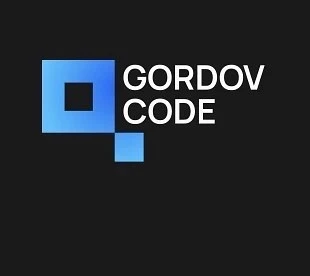
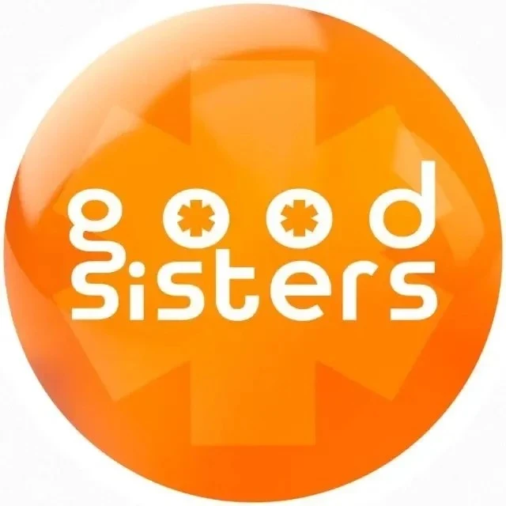
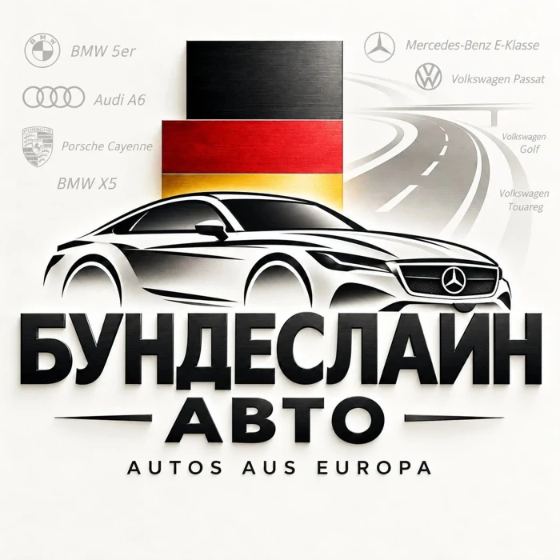
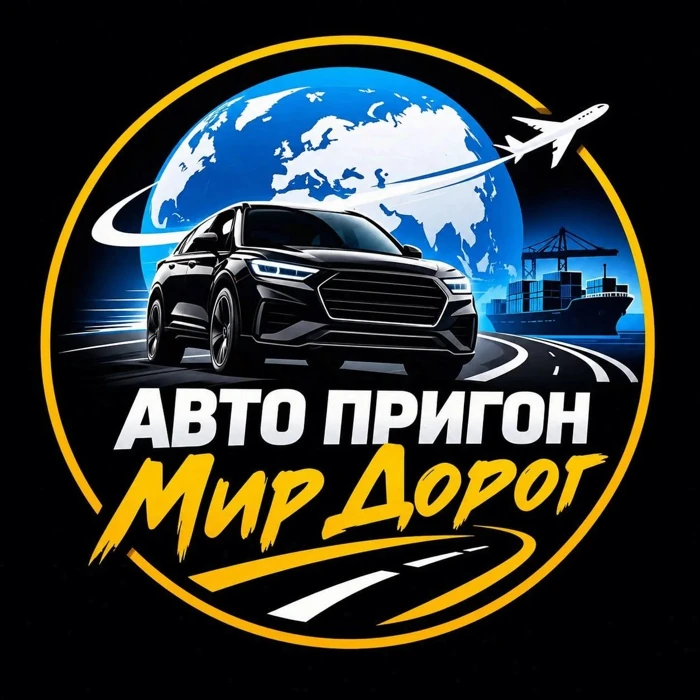
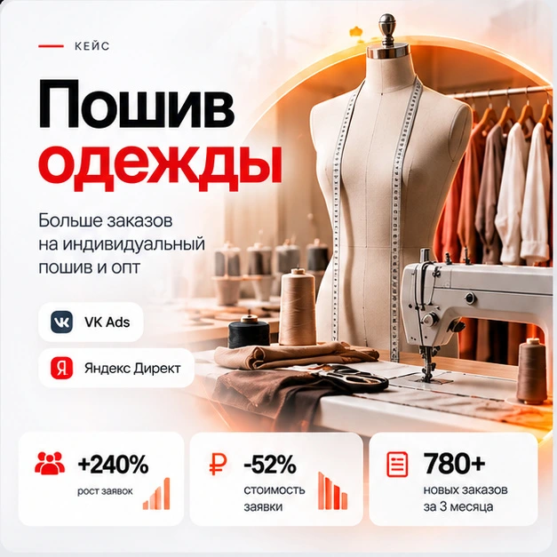
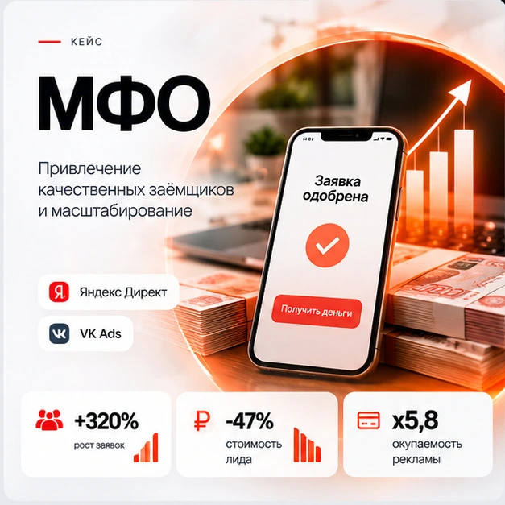
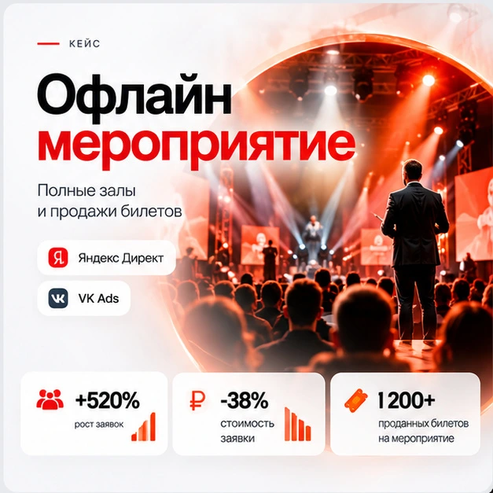

проектов — от локальных услуг
до B2B и производства
РЕКЛАМА ДЛЯ БИЗНЕСА С ПОНЯТНОЙ ЭКОНОМИКОЙ
Яндекс Директ,
который работает
на ваш бизнес
Помогаю получать обращения и принимать
решения по рекламе на основе цифр.
- ϟНахожу тех, кто ищет
ваш продукт - ϟПоказываю стоимость
и качество обращений - ϟЛично веду проект
от анализа до развития
Разберём вашу задачу и определим, с чего начать.
ВАШ КЛИЕНТ УЖЕ ИЩЕТПокажем ему ваш бизнес
Григорий ГлуховВаш специалист по Яндекс Директу
Поиск · РСЯ · Метриканиш с разными продуктами,
циклами сделки и аудиторией
Один специалист.
Весь путь до результата.
Без передачи проекта между отделами.
Отвечаю за свою работу лично.
ЧЕМ ПОМОГУ ВАШЕМУ БИЗНЕСУ
Реклама под вашу задачу
Запускаете рекламу впервые или хотите улучшить текущую?
Начнём с вашей ситуации.
ЗАПУСК С НУЛЯ
Запуск рекламы
Подготовлю и запущу рекламу под ваш продукт, аудиторию и регион.
- Разберусь в продукте, спросе и конкурентах
- Соберу запросы и объявления для Поиска и РСЯ
- Настрою цели, разметку и учёт обращений
- Проверю гипотезы и начну оптимизацию
Что запускаемПоиск и РСЯ под ваш продукт
Обсудить запускСначала — задача.
Затем — план и условия.
Затем — план и условия.
КАК СТРОИТСЯ РАБОТА
Реклама под контролем.
Вы — в курсе происходящего.
Ваши кабинеты.
Ваши данные.
Бюджет оплачиваете напрямую площадке. Доступы и история рекламы остаются у вас.
Ваш проект
веду лично
Помню детали и знаю,
зачем запускаем
каждую кампанию.
Смотрим дальше
кликов и показов
Считаем обращения и их стоимость. Обсуждаем качество заявок вместе с вами.
Еженедельный отчёт
РасходыУчтены
ОбращенияПосчитаны
Что дальшеПлан действий
Понятно, за что платите
и что делаем дальше
Регулярный отчёт: расходы, заявки, стоимость привлечения и следующие шаги.
Сначала ваш бизнес.
Потом рекламный кабинет.
Учитываю продукт, цикл сделки, регион и возможности отдела продаж.
Отраслевая экспертиза
Понимаю контекст бизнеса. Подбираю решения под вашу нишу.
ПРАКТИКА В ЦИФРАХ
За каждым результатом —
конкретная работа
Задача, подход и показатели.
Посмотрите проекты из портфолио.
МЕДИЦИНА / МОСКВА
257конверсий в Яндекс Директе
Пластический хирургМосква
Пластический хирург — Москва
Продвижение услуг пластической хирургии в Москве. Поиск и РСЯ с учётом конверсий в рекламном кабинете.
888,96 ₽стоимость конверсии228,46 тыс. ₽расход за период
IT / РАЗРАБОТКА ПРИЛОЖЕНИЙ

130конверсий
GORDOV CODEЯндекс Директ
GORDOV CODE
Разработка приложений для бизнеса. Привлечение обращений на услуги заказной разработки.
130конверсий по данным проекта427,88 тыс. ₽расход в отчёте
МЕДИЦИНА / УСЛУГИ

485конверсий по цели «звонок ЮИС»
Good SistersЯндекс Директ
Good Sisters
Медицинские услуги: медсестра на дом, капельницы и перевязки. Показатели звонков и отправок формы в Яндекс Директе.
86отправок формы1,39 млн ₽расход за период
АВТО / ИМПОРТ

9 880результатов в VK Рекламе
Бундеслайн АвтоVK Реклама
Бундеслайн Авто
Автомобили из Европы. Рекламный проект с расходом более 2,28 млн ₽ и статистикой 150 кампаний.
231,26 ₽цена за результат2,28 млн ₽расход за период
АВТО / ИМПОРТ
5 413результатов в VK Рекламе
Крутой моментVK Реклама
Крутой момент
Пригон автомобилей из Европы. Более 1,26 млн ₽ рекламного расхода и 5 413 результатов в кабинете.
234,50 ₽цена за результат1,27 млн ₽расход за период
АВТО / ИМПОРТ

5 853результата в VK Рекламе
Мир ДорогVK Реклама
Мир Дорог
Подбор и привоз автомобилей из-за рубежа. Более 1,44 млн ₽ рекламного расхода и 5 853 результата в кабинете.
247,43 ₽цена за результат1,45 млн ₽расход за период
B2B / ПРОИЗВОДСТВО

402лида на оптовый пошив
Пошив одеждыЯндекс Директ
Привели закупщиков
на производство одежды
Семантика под материалы, ткани и тиражи. Три поисковые кампании под конкретный спрос.
1 670 ₽стоимость лида15 млн ₽выручка проекта
ФИНАНСЫ / МФО

200выдач в месяц
Микрофинансовый проектЯндекс Директ
Развивали рекламу
микрофинансового проекта
Масштабировали рабочие связки с учётом заявок и выдач. Перераспределяли рекламный бюджет.
1,5 млн ₽бюджет / месяц7 млн ₽заработали
ФИНАНСЫ / МФО
130выдач из рекламы
МикрозаймыЯндекс Директ
Проверяли гипотезы
и усиливали рабочие связки
Сравнивали объявления и две посадочные страницы. Развивали кампании с учётом стоимости конверсии.
1 млн ₽бюджет / месяц4,5 млн ₽выручка проекта
ИВЕНТ / МЕРОПРИЯТИЯ

50лидов на конференцию
Офлайн-мероприятиеЯндекс Директ
Собирали обращения
на офлайн-мероприятие
Короткий запуск к конкретной дате. Поиск и РСЯ с оптимизацией по заявкам на участие.
120 тыс. ₽рекламный бюджет800 тыс. ₽выручка проекта
Показатели отдельных проектов из портфолио. Это не гарантия аналогичного результата: прогноз для вашего бизнеса обсуждаем после анализа.
Обсудим вашу рекламу на консультации
Разберём задачу и определим, с чего начать: запуск, развитие или разбор действующих кампаний.
ОТ ЗНАКОМСТВА ДО ОПТИМИЗАЦИИ
Понятный процесс.
Общая цель.
Разбираемся
в задаче
Обсуждаем продукт, аудиторию, регион, прошлый опыт и бюджет. Согласуем ориентиры.
Готовим рекламу
и аналитику
Собираю семантику и объявления. Настраиваю цели, Метрику и UTM-разметку.
Запускаем.
Проверяем.
Проверяю гипотезы на Поиске и в РСЯ. Собираю статистику и первые обращения.
Развиваем
то, что работает
Оптимизирую запросы, площадки и объявления. Обсуждаем качество заявок и план.
НАСТРОЙКА + ВЕДЕНИЕ
Яндекс Директ.
Весь цикл работы.
От анализа бизнеса до регулярной
оптимизации и понятных отчётов.
от 40 000 ₽ / месяц
Рекламный бюджет оплачивается отдельно,
напрямую площадке.
Что входит в работу
- Анализ продукта, спроса и конкурентов
- Кампании на Поиске и в РСЯ
- Семантика, объявления и минус-слова
- Цели в Метрике и учёт обращений
- Регулярная оптимизация рекламы
- Отчёты и обсуждение следующих шагов
Состав работ и итоговую стоимость согласуем
после знакомства с проектом.
ПОЛЕЗНО ДО ПЕРВОГО ЗАПУСКА
Разобраться в рекламе
чуть проще, чем кажется
Три короткие памятки для собственника.
Без регистрации и сложных терминов.
ПАМЯТКА / 01До старта
рекламы7 вопросов к своему бизнесу
рекламы7 вопросов к своему бизнесу
Что подготовить
к запуску Яндекс Директа
Цели, продукт, сайт, аналитика и работа с обращениями.
ПАМЯТКА / 02Смотрим
на результатКакие цифры нужны в отчёте
на результатКакие цифры нужны в отчёте
Что спрашивать
у специалиста по рекламе
Как связать расходы, заявки и работу отдела продаж.
ПАМЯТКА / 03Клики есть.
А заявки?Где искать причину
А заявки?Где искать причину
Почему реклама
не даёт нужных обращений
Пять участков пути, которые стоит проверить.
Какой рекламный бюджет нужен?
Ориентир — от 50 000 ₽ в месяц на рекламу. Подходящую сумму определяем по нише, региону и целям. Оплата моей работы и рекламный бюджет согласуются отдельно.
Когда появятся первые заявки?
Сначала подготовим кампании и аналитику. После запуска соберём статистику и проверим гипотезы. Сроки подготовки и контрольные точки согласуем до начала работы.
Можно прийти с действующей рекламой?
Да. Посмотрю структуру кампаний, запросы, площадки, аналитику и путь до обращения. Определим, что стоит сохранить и где есть возможности для улучшения.
Вы ведёте проект лично?
Да. Анализ, подготовка, запуск, оптимизация и отчёты — моя работа. Вы общаетесь со мной напрямую, а не передаёте одну и ту же информацию разным людям.
Кому принадлежат кабинеты и данные?
Рекламные кабинеты, данные и история кампаний остаются у вас. Бюджет оплачиваете непосредственно рекламной площадке, моя работа оплачивается отдельно.
Есть гарантия количества заявок?
Фиксированное число заявок без анализа не обещаю. До старта согласуем объём работ, прогнозные ориентиры и показатели, по которым будем оценивать рекламу.
РАЗБЕРЁМСЯ В ВАШЕЙ ЗАДАЧЕ
Наведём порядок
в вашей рекламе
Вы будете понимать, откуда приходят обращения, сколько они стоят и что делаем дальше.
Расскажите о бизнесе. Обсудим Яндекс Директ и подходящий план действий.
Григорий ГлуховЛично веду ваш проект
+7 (912) 016-87-71@grigatarget